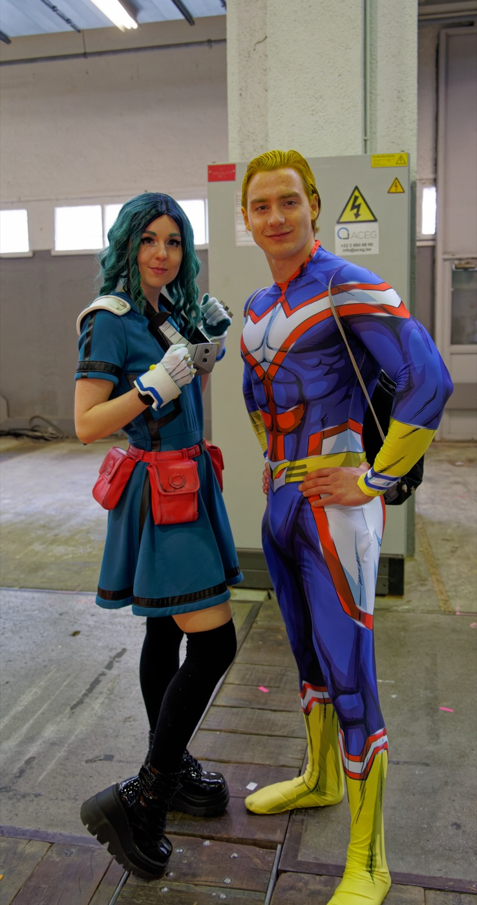

The Heroism of Meddling
A doctrine, an anime quote, and a fourteen-year-old son.
"Meddling when you don't need to — that's the essence of being a hero." All Might, My Hero Academia
The world has a word for the man who steps in when he doesn't have to.
Busybody. Meddler. Doesn't know his place. Stay in your lane.
Scripture has a different word: watchman.
My son Gideon and I have been working our way through My Hero Academia together — at various times across the last year or so. He is fourteen, and the kind of kid who would memorize every quirk in the series if I let him. Anime is not my native tongue. There are lines we do not cross, episodes we skip, themes we will not let in the house. But every hour we do watch, I am trying to use: not just to watch, but to ask the questions a father has to ask if he is not going to surrender the formation of his son to the screen.
The line above is All Might's — the show's All-American-coded #1 hero, drawn red, white, and blue. I heard it across the couch one night and stopped the episode. Because it was not a Japanese-cartoon line. It was a Samaritan-on-the-road-to-Jericho line. And it deserved a longer answer than a fourteen-year-old's "huh, that's deep, Dad."
What follows is the longer answer.
The Lane You're Told to Stay In
There is a quiet doctrine of cowardice loose in our age, and it travels in respectable clothes. It calls itself minding your own business. It calls itself not getting involved. It says the wise man sees trouble and walks past it, that maturity is restraint, that the family across the street, the child being shaped by the school down the road, the brother spiraling into sin — none of it is your concern unless your name is on the title.
That doctrine has nothing in it of Christ.
The priest and the Levite in Luke 10 did not steal from the man on the road to Jericho. They did not strike him. They did exactly what the world calls wise — they kept walking. They stayed in their lane. They minded their own business. And they are remembered in Scripture as a warning.
It was the Samaritan — the man with no obligation, no kinship, no shared tribe — who meddled. He stepped into someone else's emergency. He spent his own oil and wine and money on a problem that wasn't his. The parable does not call him reckless. It calls him neighbor.
The Watchman Is a Meddler by Office
When the LORD set Ezekiel as a watchman over the house of Israel, He did not give him a charge to mind his own business (Ezekiel 33:7–9). He gave him the opposite charge — to get involved, to warn, to speak when others would stay silent. If the watchman sees the sword and does not blow the trumpet, the blood of the dying is on his hands.
There is no neutral position on a wall. You either watch or you sleep. You either warn or you become complicit in the silence. The world's minding your own business is, biblically, dereliction.

What You Have Not Been Called To
You have not been called to keep peace by keeping quiet.
You have not been called to be respected by staying in your lane.
You have not been called to mature so far into restraint that you become a stranger to courage.
You have been called to be a watchman over your house, your family, your church, your city, your nation — in that order and at that cost. Some of those posts are assigned to you by name. Most are not. The man who only stands the posts assigned to him by name is a hireling. The man who stands at posts no one assigned him because he saw the sword coming and could not sit down — that man is a son.
Meddle Well
Meddling for its own sake is busybody-work — the very thing 1 Peter 4:15 forbids. Meddling for the kingdom is heroism. You can tell the difference by asking three questions before you step in:
- Is what I'm about to do for the good of the one I'm meddling with, or for the satisfaction of being right?
- Am I willing to spend my own oil and wine on this, or only my opinion?
- If I'm wrong, am I prepared to repent in public the same way I'm prepared to speak in public?
If the answer to all three is yes, step in. Do not wait for an invitation. The man on the road to Jericho did not call for help — he could not. The Samaritan heard nothing and went anyway.
Hold the Line
The world will tell you that the man who keeps his head down is wise.
The watchman knows better. The hero meddles because love refuses to walk past the man on the road, and the kingdom advances through men who would not stay in their lane.
Stand your post. Hold the line. Meddle when you don't need to.
Especially then.
A note to Gideon
Bud — you sat next to me when All Might said that line, and you nodded at the screen like you understood. I think you did. The screen wants to do your formation for you. Don't let it. Let the LORD do your formation. Then go meddle — in your brothers' lives, in your friends' temptations, in the lanes the world tells you aren't yours. Be the man who steps in when no one asked. That is not extra credit for a Christian man; that is the job description. I love you. Now go.
— Dad
Drill into the foundation
Every dotted-underlined word in this post is a live entry in the MOOP Dictionary. If a word landed, click through to its full definition — biblical, Webster, modern corruption, Greek/Hebrew roots.